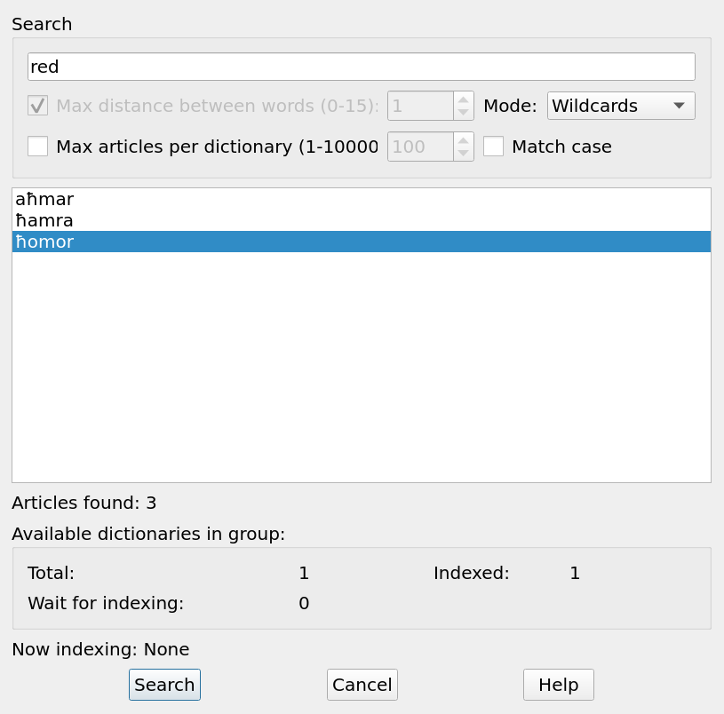
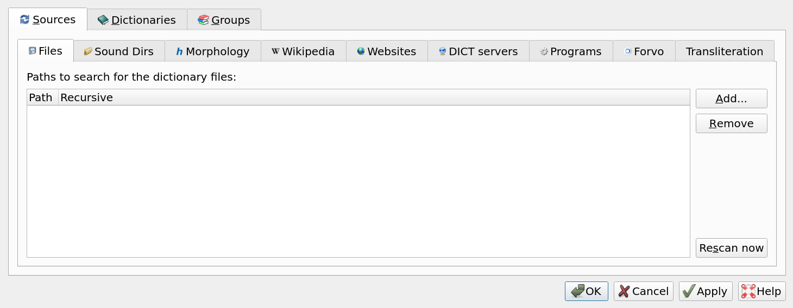
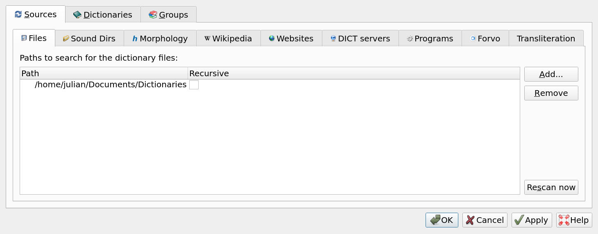
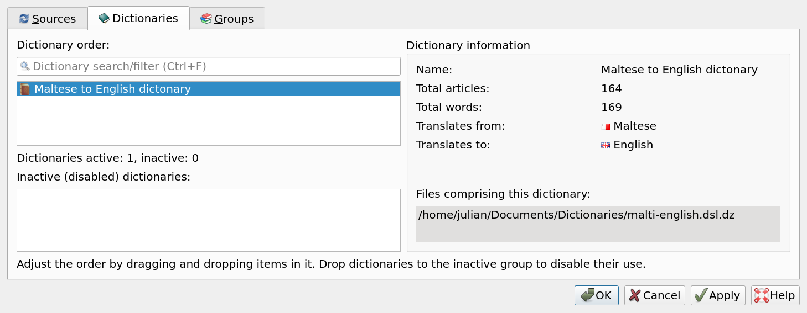

Maltese to English Dictionary + Tutorial
Introduction
I, Julian, have created a very simple Maltese to English dictionary, that I am able to add words to easily, and view offline.
The dictionary is written in the 'ABBYY Lingvo .dsl' format, using the 'GoldenDict,' dictionary program, available on Windows, Linux and Android, to read the contents of the file. Other programs can be used, such as Fora Dictionary Pro on iOS and Android, to view the dictionary.
Layout

When you search for a word in Maltese:
- The word in bold, signifies the Maltese word.
- The first line, details the type of word, as well as what form the word is in (Male, Female, Plural)
- The indented second line, indicates the English translation
Note: that the layout I have created, may be subject to changes in the future. When creating your own dictionary, you can create your own layout, in what ever way you see fit.
Whilst normally, searching is one way, Maltese to English, you can also search in the reverse, English to Maltese. This is useful, as words have multiple forms in Maltese, that are not always easy to derive.
To do this with Goldendict, you use the 'Full-Text search' feature. The Goldendict manual states that:
The full-text search dialog can be called via menu "Search" or by pressing the "Ctrl+Shift+F" keys. Such search allow to search words and expressions NOT in dictionary headwords BUT in articles text of dictionaries from current dictionaries group.
Let's try searching for the English word: 'red.'

As you can see, there are 3 forms of the word red in Maltese, that are present in the dictionary:
- aħmar - male form
- ħamra - female form
- ħomor - plural form
Installation
The dictionary and its source code, can be downloaded from my Maltese to English Dictionary github repo.
There are two ways of installing the dictionary. The first way is in the compressed format. The second is in the raw '.dsl' format.
I will be using the Goldendict software, to install this dictionary. Instructions may vary. based on the software used.
Compressed format
The dictionary in the compressed format, is the easiest to install, and works out of the box.
- Download the 'malti-english.dsl.dz' file, from my github repo.
- Create a folder where the dictionary will be placed.
- Place the dictionary file, in the newly created folder.
- Open the GoldenDict application, and click on 'edit' in the taskbar, then 'Dictionaries.' You can also press F3 on your keyboard.
- A menu will pop up. Make sure you are in the 'Sources' section, and 'Files' section. Add the folder in which the Maltese to English dictionary is located, by pressing the 'Add' button. A prompt will come up, allowing you to select the folder.
 - When you see the folder listed, click the 'Rescan Now' button, or press CTRL+F5, to have GoldenDict recognise the dictionary.
 - Click on the 'Dictionaries' section. You shall see the 'Maltese to English dictionary' listed. When you are finished, click on the 'Apply' button
 - That's a wrap! Now you can use the dictionary.
Raw format
If you wish to make frequent changes to the dictionary, such as adding new words, then it is beneficial to install the dictionary, in the raw 'malti-english.dsl' file format.
As outlined in the README in the github repo:
A raw '.dsl' file, MUST be converted to the UTF-16 character encoding format, to be read by dictionary software, such as GoldenDict. Github cannot read UTF-16 encoded files, and therefore, the 'malti-english.dsl' file in this repo, is in the UTF-8 format only.
To convert the UTF-8 file to UTF-16, you use the command-line application: GNU iconv. It is automatically available on most Linux distributions, with GNU core utils. There is also a Windows version available to download.
To convert the raw '.dsl' file, in the UTF-8 format to UTF-16, simply run the command:
iconv -f utf-8 -t utf-16 -o malti-english-UTF-16.dsl malti-english.dsl
And you're done!
All special Maltese characters: ġ,ż,ħ,ċ, that occur in Maltese words, will now all be correctly displayed by the software.
Now you can use the instructions in the 'Compressed Format' section, to install the raw file, as you would the compressed one.
I am stuck, or found an issue, what should I do?
If you are stuck and need help, feel free to contact us via email at: malti-archipelago-info@protonmail.com
You can also create an issue on the dictionary's github repo.
Resources
Below are resources I used, to help me understand the DSL format. You can use these, to make edits and changes to my dictionary, or create your own.
- DSL Compiler guide - explains how the format works, along with an explanation of its syntax.
- Sample DSL - A github repo, containing an example DSL file.
- DSL Tools - A github repo, containing a script to compress a raw '.dsl' file.
- IPA Dictionaries in DSL Format - A github repo, containing valuable information on the DSL format.